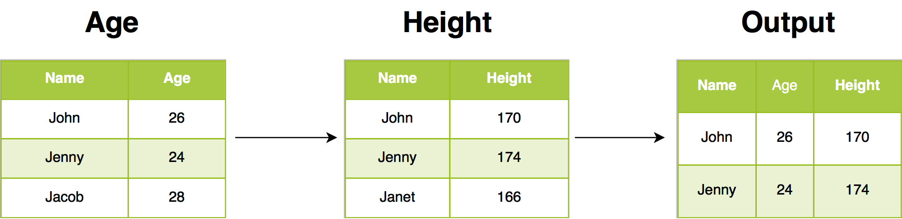
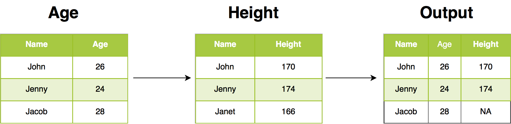
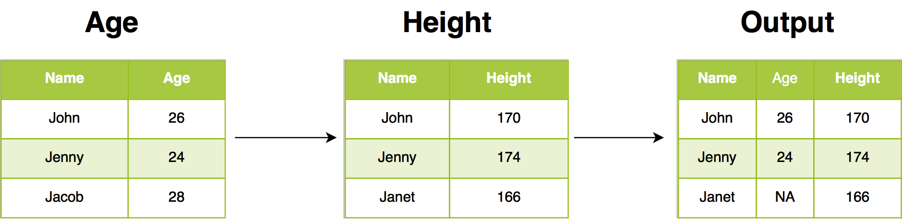
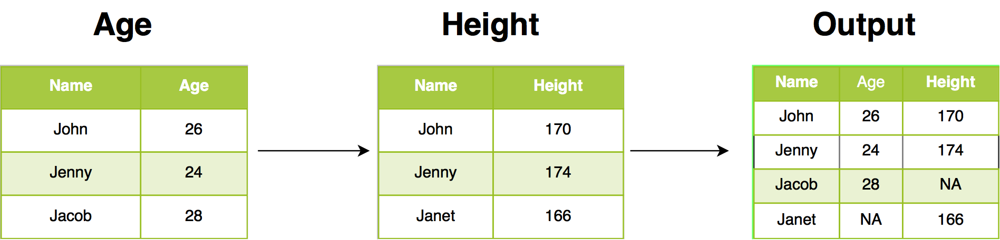

Chapter 4 Data Wrangling - 2
4.1 Introduction
In this chapter, we will learn to combine tables using different *_join
functions provided in dplyr.
We will use the following R packages:
4.2 Case Study
For our case study, we will use two data sets. The first one, order, contains
details of orders placed by different customers. The second data set, customer
contains details of each customer. The below table displays the details stored
in each data set.

Let us import both the data sets using read_csv.
4.2.1 Data: Orders
order <- read_delim('https://raw.githubusercontent.com/rsquaredacademy/datasets/master/order.csv', delim = ';')
order## # A tibble: 300 x 3
## id order_date amount
## <dbl> <chr> <dbl>
## 1 368 7/2/2016 365.
## 2 286 11/2/2016 2064.
## 3 28 2/22/2017 432.
## 4 309 3/5/2017 480.
## 5 2 12/28/2016 235.
## 6 31 12/30/2016 2745.
## 7 179 12/21/2016 2358.
## 8 484 11/24/2016 1031.
## 9 115 9/9/2016 1218.
## 10 340 5/6/2017 1184.
## # ... with 290 more rows4.2.2 Data: Customers
customer <- read_delim('https://raw.githubusercontent.com/rsquaredacademy/datasets/master/customer.csv', delim = ';')
customer## # A tibble: 91 x 3
## id first_name city
## <dbl> <chr> <chr>
## 1 1 Elbertine California
## 2 2 Marcella Colorado
## 3 3 Daria Florida
## 4 4 Sherilyn Distric...
## 5 5 Ketty Texas
## 6 6 Jethro California
## 7 7 Jeremiah California
## 8 8 Constancia Texas
## 9 9 Muire Idaho
## 10 10 Abigail Texas
## # ... with 81 more rowsWe will explore the following in the case study:
- details of customers who have placed orders and their order details
- details of customers and their orders irrespective of whether a customer has placed orders or not
- customer details for each order
- details of customers who have placed orders
- details of customers who have not placed orders
- details of all customers and all orders
4.3 Example Data
We will use another data set to illustrate how the different joins work. You can view the example data sets below.

4.4 Inner Join
Inner join return all rows from Age where there are matching values in
Height, and all columns from Age and Height. If there are multiple matches
between Age and Height, all combination of the matches are returned.

4.4.1 Case Study: Details of customers who have placed orders and their order details
To get data for all those customers who have placed orders in the past let us
join the order data with the customer data using inner_join.
## # A tibble: 55 x 5
## id first_name city order_date amount
## <dbl> <chr> <chr> <chr> <dbl>
## 1 2 Marcella Colorado 12/28/2016 235.
## 2 2 Marcella Colorado 8/31/2016 1150.
## 3 5 Ketty Texas 1/17/2017 346.
## 4 6 Jethro California 1/27/2017 2317.
## 5 7 Jeremiah California 6/21/2016 136.
## 6 7 Jeremiah California 2/13/2017 1407.
## 7 7 Jeremiah California 7/8/2016 1914.
## 8 8 Constancia Texas 11/5/2016 2461.
## 9 8 Constancia Texas 5/19/2017 2714.
## 10 9 Muire Idaho 12/28/2016 187.
## # ... with 45 more rows4.5 Left Join
Left join return all rows from Age, and all columns from Age and Height.
Rows in Age with no match in Height will have NA values in the new columns.
If there are multiple matches between Age and Height, all combinations of
the matches are returned.

4.6 Case Study: Details of customers and their orders irrespective of whether a customer has
placed orders or not.
To get data for all those customers and their orders irrespective of whether a
customer has placed orders or not let us join the order data with the
customer data using left_join.
## # A tibble: 104 x 5
## id first_name city order_date amount
## <dbl> <chr> <chr> <chr> <dbl>
## 1 1 Elbertine California <NA> NA
## 2 2 Marcella Colorado 12/28/2016 235.
## 3 2 Marcella Colorado 8/31/2016 1150.
## 4 3 Daria Florida <NA> NA
## 5 4 Sherilyn Distric... <NA> NA
## 6 5 Ketty Texas 1/17/2017 346.
## 7 6 Jethro California 1/27/2017 2317.
## 8 7 Jeremiah California 6/21/2016 136.
## 9 7 Jeremiah California 2/13/2017 1407.
## 10 7 Jeremiah California 7/8/2016 1914.
## # ... with 94 more rows4.7 Right Join
Right join return all rows from Height, and all columns from Age and
Height. Rows in Height with no match in Age will have NA values in the
new columns. If there are multiple matches between Age and Height, all
combinations of the matches are returned.

4.7.1 Case Study: Customer details for each order
To get customer data for all orders, let us join the order data with the
customer data using right_join.
## # A tibble: 300 x 5
## id first_name city order_date amount
## <dbl> <chr> <chr> <chr> <dbl>
## 1 2 Marcella Colorado 12/28/2016 235.
## 2 2 Marcella Colorado 8/31/2016 1150.
## 3 5 Ketty Texas 1/17/2017 346.
## 4 6 Jethro California 1/27/2017 2317.
## 5 7 Jeremiah California 6/21/2016 136.
## 6 7 Jeremiah California 2/13/2017 1407.
## 7 7 Jeremiah California 7/8/2016 1914.
## 8 8 Constancia Texas 11/5/2016 2461.
## 9 8 Constancia Texas 5/19/2017 2714.
## 10 9 Muire Idaho 12/28/2016 187.
## # ... with 290 more rows4.8 Semi Join
Semi join return all rows from Age where there are matching values in Height,
keeping just columns from Age. A semi join differs from an inner join because
an inner join will return one row of Age for each matching row of Height,
where a semi join will never duplicate rows of Age.

4.8.1 Case Study: Details of customers who have placed orders
To get customer data for all orders where customer data exists, let us join the order data with the
customer data using semi_join. You can observe that data is returned only for those
cases where customer data is present.
## # A tibble: 42 x 3
## id first_name city
## <dbl> <chr> <chr>
## 1 2 Marcella Colorado
## 2 5 Ketty Texas
## 3 6 Jethro California
## 4 7 Jeremiah California
## 5 8 Constancia Texas
## 6 9 Muire Idaho
## 7 15 Valentijn California
## 8 16 Monique Missouri
## 9 20 Colette Texas
## 10 28 Avrit Texas
## # ... with 32 more rows4.9 Anti Join
Anti join return all rows from Age where there are not matching values in
Height, keeping just columns from Age.

4.9.1 Case Study: Details of customers who have not placed orders
To get details of customers who have not placed orders, let us join the order
data with the customer data using anti_join.
## # A tibble: 49 x 3
## id first_name city
## <dbl> <chr> <chr>
## 1 1 Elbertine California
## 2 3 Daria Florida
## 3 4 Sherilyn Distric...
## 4 10 Abigail Texas
## 5 11 Wynne Georgia
## 6 12 Pietra Minnesota
## 7 13 Bram Iowa
## 8 14 Rees New York
## 9 17 Orazio Louisiana
## 10 18 Mason Texas
## # ... with 39 more rows4.10 Full Join
Full join return all rows and all columns from both Age and Height. Where
there are not matching values, returns NA for the one missing.

4.10.1 Case Study: Details of all customers and all orders
To get details of all customers and all orders, let us join the order
data with the customer data using full_join.
## # A tibble: 349 x 5
## id first_name city order_date amount
## <dbl> <chr> <chr> <chr> <dbl>
## 1 1 Elbertine California <NA> NA
## 2 2 Marcella Colorado 12/28/2016 235.
## 3 2 Marcella Colorado 8/31/2016 1150.
## 4 3 Daria Florida <NA> NA
## 5 4 Sherilyn Distric... <NA> NA
## 6 5 Ketty Texas 1/17/2017 346.
## 7 6 Jethro California 1/27/2017 2317.
## 8 7 Jeremiah California 6/21/2016 136.
## 9 7 Jeremiah California 2/13/2017 1407.
## 10 7 Jeremiah California 7/8/2016 1914.
## # ... with 339 more rows